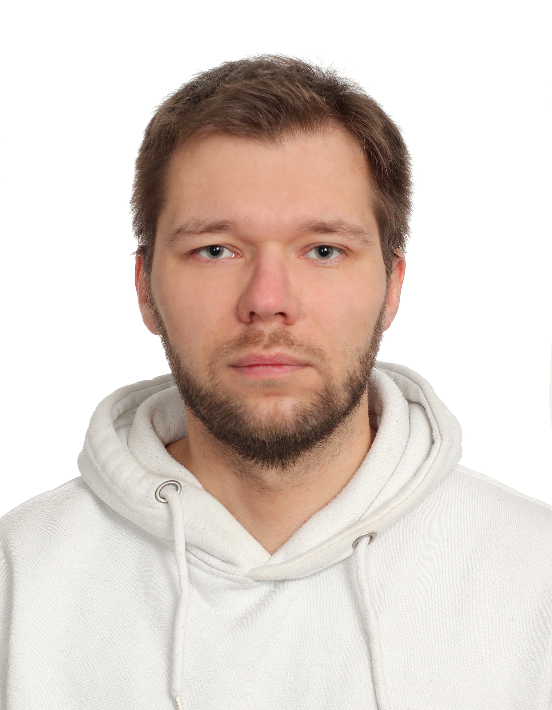
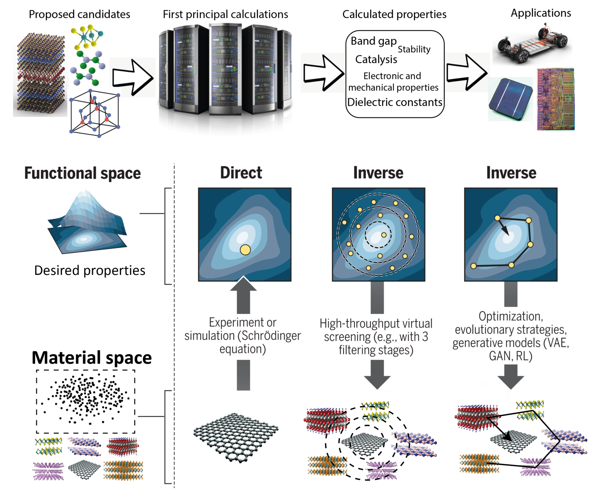
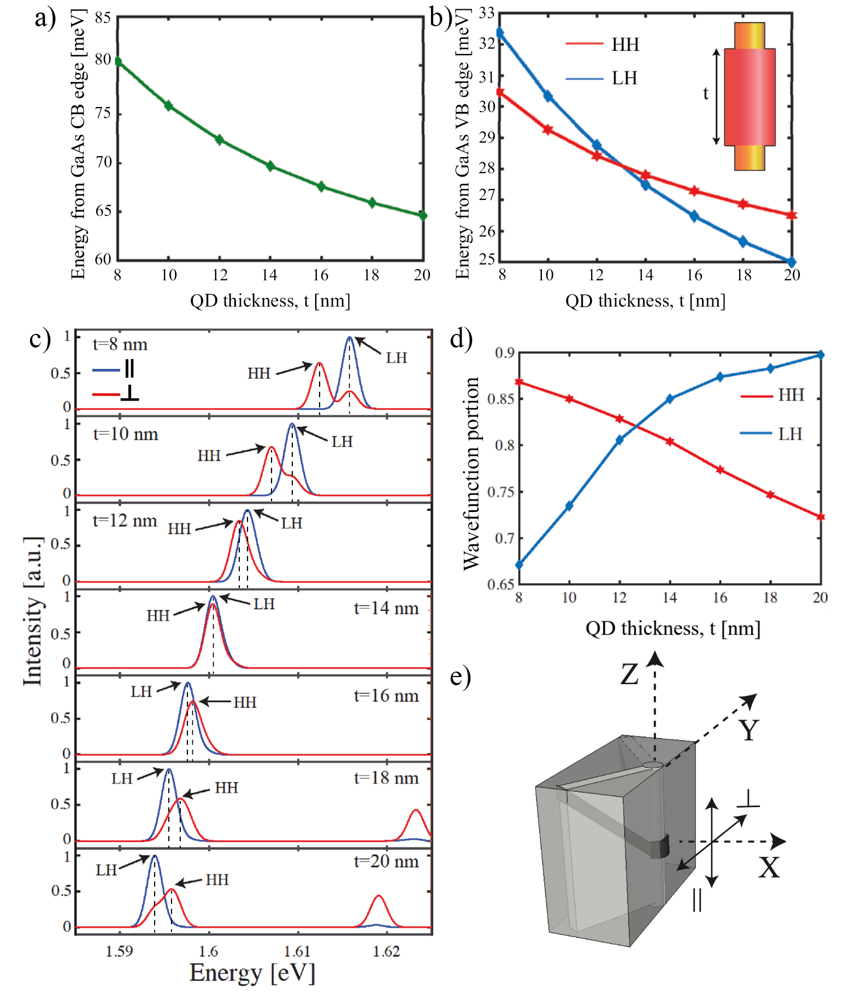
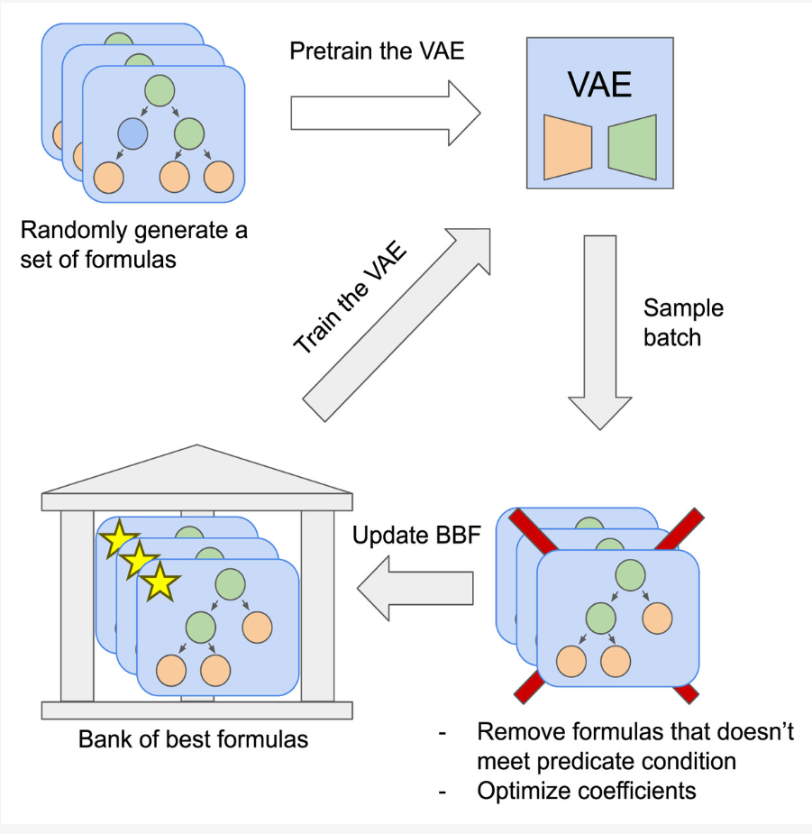
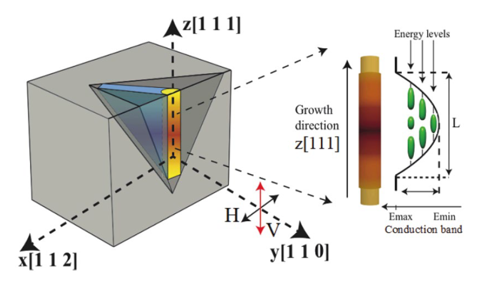
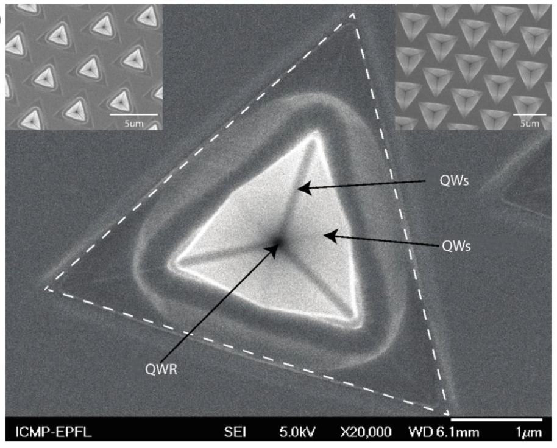
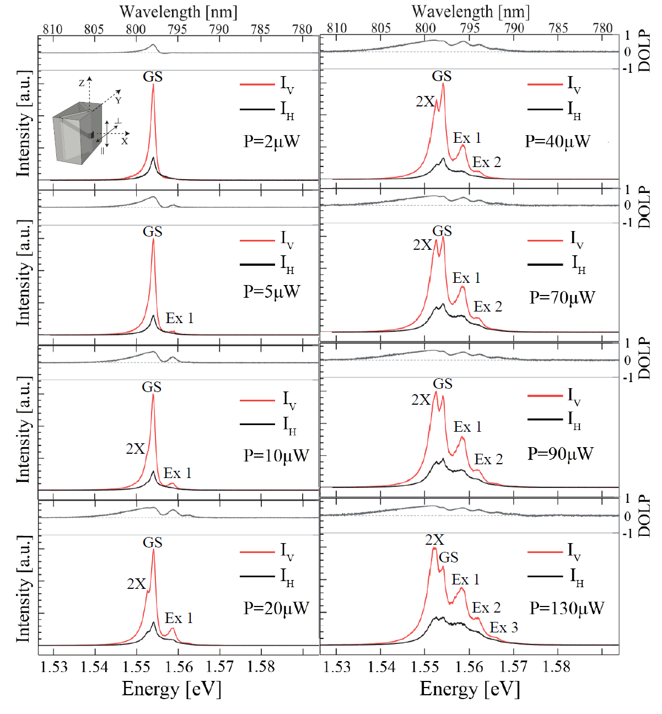
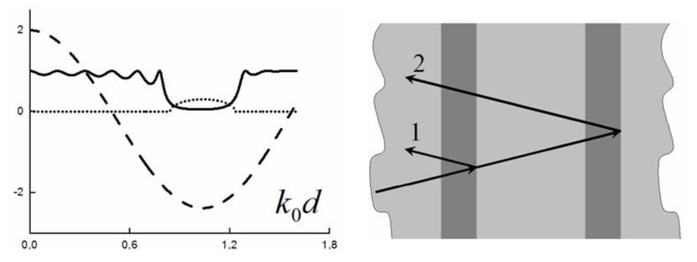

|
Mikhail Lazarev
I'm a research scientist at LAMBDA at HSE AI Institute in Moscow, where I lead a small team that mostly works on Material science and DL.
Prior HSE I've worked on experimental and theoretical nanopysics. I did my PhD at EPFL. My research interest comes from a sincere curiosity and love for fundamental physics and knowledge about the nature of the surrounding world. Gradually, I expanded my knowledge. I came through the way from applied physics to machine learning. My interests are interdisciplinary, although they belong to one large branch of nanophysics and applied Deep Learning. I'm interested in several fields, not limited to but mainly in low-dimensional systems, nanophotonic, 2D materials, computer vision, graph neural networks, and generative AI.
📧Email /
📋CV /
🎓Scholar /
📷Instagram /
💻Github
|

|
Research
Modeling systems with a large number of parameters is a rather complicated process that requires a relatively long time for a scientist and not a small computing power. In that sense, machine learning can make things a lot easier. It is difficult to overestimate the potential of using machine learning algorithms, they are already penetrating into all spheres of human activity. I believe that the crosssection of AI methods and natural sciences will deliver more exciting tools and discoveries in the near future.
|
|

|
Review on automated 2D material design
Abdalaziz Al-Maeeni,Mikhail Lazarev, Nikita Kazeev, Kostya S Novoselov, Andrey Ustyuzhanin
2D Materials, 2024
[Journal Page]
Deep learning (DL) methodologies have led to significant advancements in various domains, facilitating intricate data analysis and enhancing predictive accuracy and data generation quality through complex algorithms. In materials science, the extensive computational demands associated with high-throughput screening techniques such as density functional theory, coupled with limitations in laboratory production, present substantial challenges for material research. DL techniques are poised to alleviate these challenges by reducing the computational costs of simulating material properties and by generating novel materials with desired attributes. This comprehensive review document explores the current state of DL applications in materials design, with a particular emphasis on two-dimensional materials. The article encompasses an in-depth exploration of data-driven approaches in both forward and inverse design within the realm of materials science.
|
|

|
Numerical study of valence band states evolution in AlxGa1-xAs [111] QDs systems
Mikhail Lazarev
PeerJ Materials Science, 2024
[Journal Page]
[GitHub]
Quantum dots (QDs) are very attractive nanostructures from an application point of view due to their unique optical properties. Optical properties and valence band (VB) state character was numerically investigated with respect to the effects of nanostructure geometry and composition. Numerical simulation was carried out using the Luttinger–Kohn model adapted to the particular case of QDs in inverted pyramids. We present the source code of the 4-band Luttinger–Kohn model that can be used to model AlGaAs or InGaAs nanostructures. The work focuses on the optical properties of GaAs/AlGaAs [111] QDs and quantum dot molecules (QDMs). We examine the dependence of Ground State (GS) optical properties on the structural parameters and predict optimal parameters of the QD/QDM systems to achieve dynamic control of GS polarization by an applied electric field.
|
|

|
Symbolic expression generation via variational auto-encoder
Sergei Popov,Mikhail Lazarev Vladislav Belavin, Denis Derkach, Andrey Ustyuzhanin
PeerJ Computer Science, 2023
[Journal Page]
There are many problems in physics, biology, and other natural sciences in which symbolic regression can provide valuable insights and discover new laws of nature. Widespread deep neural networks do not provide interpretable solutions. Meanwhile, symbolic expressions give us a clear relation between observations and the target variable. However, at the moment, there is no dominant solution for the symbolic regression task, and we aim to reduce this gap with our algorithm. In this work, we propose a novel deep learning framework for symbolic expression generation via variational autoencoder (VAE). We suggest using a VAE to generate mathematical expressions, and our training strategy forces generated formulas to fit a given dataset. Our framework allows encoding apriori knowledge of the formulas into fast-check predicates that speed up the optimization process. We compare our method to modern symbolic regression benchmarks and show that our method outperforms the competitors under noisy conditions. The recovery rate of SEGVAE is 65% on the Ngyuen dataset with a noise level of 10%, which is better than the previously reported SOTA by 20%. We demonstrate that this value depends on the dataset and can be even higher.
|
|

|
Physical origins of optical anisotropy in quantum-confined semiconductors: The roles of valence band mixing, transition broadening, and state filling
Mikhail Lazarev, A. Rudra, E. Kapon
Journal of Applied Physics, 2023
[Journal Page]
We investigate experimentally and theoretically the impact of valence band mixing and spectrum of confined states on the polarization of light emitted from or absorbed by GaAs/AlGaAs semiconductor quantum dots and quantum wires with tailored heterostructure potential. In particular, such nanostructures with parabolic-profile confinement potentials, realized by organometallic vapor phase epitaxy inside pyramidal pits, served as model systems for the study. Different degrees of linear polarization (DOLP) of emitted light, depending on the confinement potential profile, the specific excitonic transition, and the level of excitation, are observed. A theoretical model shows that, besides the impact of valence band mixing, the overlap of conduction and valence band wavefunctions as well as state occupation probability and broadening of transitions determine the DOLP. The conclusions are useful for the design of quantum light emitters with controlled polarization properties.
|
|

|
Parabolic tailored-potential quantum-wires grown in inverted pyramids
Mikhail Lazarev, J Szeszko, A Rudra, K Fredrik Karlsson, E Kapon
Journal of Crystal Growth, 2015
[Journal Page]
Quasi-one-dimensional AlGaAs quantum wires (QWRs) with parabolic heterostructure profiles along their axis were fabricated using metallorganic vapor phase epitaxy (MOVPE) on patterned (111)B GaAs substrates. Tailoring of the confined electronic states via modification in the parabolic potential profile is demonstrated using model calculations and photoluminescence spectroscopy. These novel nanostructures are useful for studying the optical properties of systems with dimensionality between zero and one.
|
|

|
Tailored-potential semiconductor quantum nanostructures grown in inverted pyramids
Mikhail Lazarev
EPFL, 2019
[Journal Page]
We have focused on the ability to tune the aluminum (Al) content of the AlGaAs alloy along the growth direction in inverted pyramids (by MOVPE), thus tailoring the potential along a QWR nanostructure. Three parabolic-potential QDs (PQDs) of different potential gradients have thus been realized. The impact of quantum confinement was investigated using polarization-resolved and time-resolved photoluminescence spectroscopy. The results indicate that such PQDs can be used as a model structure for investigating the transition in optical properties from QWR-like to QD-like structures. Two extreme cases in terms of confinement strength were also realized: a thin, lens-shaped GaAs QD and a long (480 nm) AlGaAs QWR as a model structure of infinitely long QWRs. Polarization-resolved measurements show that the QD and the QWR emit in different polarizations, aligned perpendicularly and mostly parallel to the growth direction, respectively. We have also demonstrated a method for extracting the occupation numbers, the exciton effective temperature and the Fermi levels in these structures, and observed multiexcitonic states in the emission spectra. We identified several geometries in which fine-tuning the geometry can yield switching from HH-like and LH-like transitions. Control of the confinement geometry was used as a basis for controlling the polarization state of the emitted light. The knowledge obtained in this work should be useful for the fabrication of future polarization-controlled single-photon devices.
|
|

|
Formation features of the band gaps in one-dimensional large contrast photonic crystals
Mikhail Lazarev,
Alexander Merzlikin
Journal of radio electronics, 2011
[Journal Page]
Usually, the formation of band gaps in photonic crystals (PCs) associated with the condition of Bragg reflection, when the optical path length through the unit cell size of half a wavelength. In this article we have shown that at high contrast admittance values of layers, forming a one-dimensional PC, there can be formed band gaps when the optical path length through the unit cell is much less than half the wavelength. Physical implementation of this PC available in the UHF range. Qualitative explanation of this effect is based on the multipass concept. We derive the condition for resonance reflection applicable to photonic crystals of a large contrast.
|
|
{kind=link}